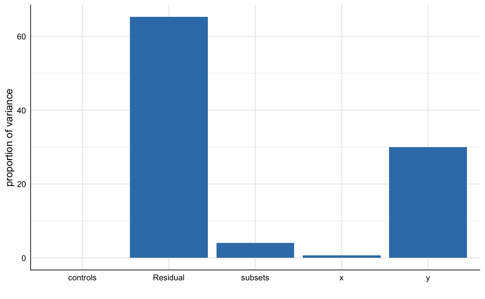

Decomposing the variance of the specification curve
decompose_var.rmdThis vignette exemplifies ways to decompose and identify variance components in any statistic obtained by running a specification curve analysis.
1. Run the specification curve analysis
In order to have some data to work with, we run the minimal example contained in the package.
library(specr)
library(ggplot2)
library(dplyr)
# run spec analysis
results <- run_specs(example_data,
y = c("y1", "y2"),
x = c("x1", "x2"),
model = "lm",
controls = c("c1", "c2"),
subset = list(group1 = unique(example_data$group1),
group2 = unique(example_data$group2)))Let’s quickly get some ideas about the specification curve by using summarise_specs()
# Overall median
summarise_specs(results)## # A tibble: 1 x 7
## median mad min max q25 q75 obs
## <dbl> <dbl> <dbl> <dbl> <dbl> <dbl> <dbl>
## 1 3.59 4.56 -2.05 9.58 1.03 7.63 123# By choices
summarise_specs(results,
y, controls)## # A tibble: 8 x 9
## # Groups: y [2]
## y controls median mad min max q25 q75 obs
## <chr> <chr> <dbl> <dbl> <dbl> <dbl> <dbl> <dbl> <dbl>
## 1 y1 c1 7.72 0.744 3.53 8.96 6.44 8.13 123
## 2 y1 c1 + c2 7.03 1.39 3.49 8.71 6.25 8.05 123
## 3 y1 c2 7.15 1.44 3.94 9.58 6.35 8.37 123
## 4 y1 no covariates 7.97 1.40 4.24 9.28 6.80 8.42 123
## 5 y2 c1 1.11 1.40 -2.05 2.79 0.144 1.83 123
## 6 y2 c1 + c2 0.796 1.11 -1.94 2.83 0.101 1.37 123
## 7 y2 c2 0.690 1.00 -1.61 3.64 0.367 1.82 123
## 8 y2 no covariates 1.31 0.931 -1.80 3.67 0.674 1.92 123We see that it makes quite a difference whether y1 or y2 is used as independent variable.
2. Estimate a simple multilevel model
We can think of the specification curve analysis as a factorial design in which we investigate the influence of different types of analytical choices on a resulting coefficient or test statistic. One way to investigate these effects is to ask how much variance in the specification curve is explained by what (or which combination of) analytical choices.
In a first step, we therefore have to estimate a simple multilevel model without predictors, yet with specific random effects that represent the analytical choices.
# Package to estimate multilevel models
library(lme4)
# Estimate model
m1 <- lmer(estimate ~ 1 + (1|x) + (1|y) + (1|controls) + (1|subsets), data = results)
# Check model summary
summary(m1)## Linear mixed model fit by REML ['lmerMod']
## Formula: estimate ~ 1 + (1 | x) + (1 | y) + (1 | controls) + (1 | subsets)
## Data: results
##
## REML criterion at convergence: 591.7
##
## Scaled residuals:
## Min 1Q Median 3Q Max
## -2.85509 -0.60698 -0.03593 0.55041 2.83207
##
## Random effects:
## Groups Name Variance Std.Dev.
## subsets (Intercept) 0.76138 0.8726
## controls (Intercept) 0.03861 0.1965
## y (Intercept) 19.72906 4.4417
## x (Intercept) 0.42335 0.6507
## Residual 1.00930 1.0046
## Number of obs: 192, groups: subsets, 12; controls, 4; y, 2; x, 2
##
## Fixed effects:
## Estimate Std. Error t value
## (Intercept) 4.079 3.187 1.28We have now stored the random effects in the object m. We can already see that most variance is related to the random effect y|intercept. Yet, how much exactly?
3. Estimate intraclass correlations
Specr offers to ways to decompose the variance of the specification curve. First, we can simply compute the intraclass correlations using the function icc_specs().
## grp vcov icc percent
## 1 subsets 0.76 0.03 3.47
## 2 controls 0.04 0.00 0.18
## 3 y 19.73 0.90 89.83
## 4 x 0.42 0.02 1.93
## 5 Residual 1.01 0.05 4.60We can see that 89.83% of the variance in the obtained results is related to choosing different dependent variables. Only small parts of the variance are explained by other analytical choices.
4. Plot variance components
Second, we can alternatively use the function plot_variance() to obtain a visualization. The function calls icc_specs() automatically. We can hence pass the multilevel results object directly. Further customizations via the ggplot2-syntax is possible.
plot_variance(m1) +
ylim(0, 100)
5. Further investigating variance components
You might ask yourself why we did not include the multilevel model estimation in the icc_specs() function. The reason is straight-forward: In many cases, it might be of interest to decompose the variance in different ways (e.g., including interactions between the analytical choices). In this case, we only need to specify the respective multilevel model (with alternative random effects) and we can again obtain a result table of a plot.
m2 <- lmer(estimate ~ 1 + (1|x) + (1|y) + (1|controls) + (1|subsets) + (1|x:y) + (1|y:controls) + (1|y:subsets), data = results)
# Get table
icc_specs(m2) %>%
mutate_if(is.numeric, round, 2)## grp vcov icc percent
## 1 y:subsets 0.76 0.03 3.49
## 2 subsets 0.41 0.02 1.87
## 3 y:controls 0.00 0.00 0.00
## 4 x:y 0.02 0.00 0.09
## 5 controls 0.05 0.00 0.22
## 6 y 19.46 0.90 89.55
## 7 x 0.42 0.02 1.92
## 8 Residual 0.62 0.03 2.87# Plot results
plot_variance(m2)
We can see that the interaction between analytical choices relating to subsets and dependent variables explains 3.49%.
6. Investigating other statistics
Finally it should be noted that other obtained statistics can be investigated as well (not only the main estimate, e.g., a regression coefficient).
m3 <- lmer(p.value ~ 1 + (1|x) + (1|y) + (1|controls) + (1|subsets), data = results)## boundary (singular) fit: see ?isSingular## grp vcov icc percent
## 1 subsets 0.00 0.04 4.07
## 2 controls 0.00 0.00 0.00
## 3 y 0.02 0.30 29.99
## 4 x 0.00 0.01 0.74
## 5 Residual 0.03 0.65 65.21plot_variance(m3)